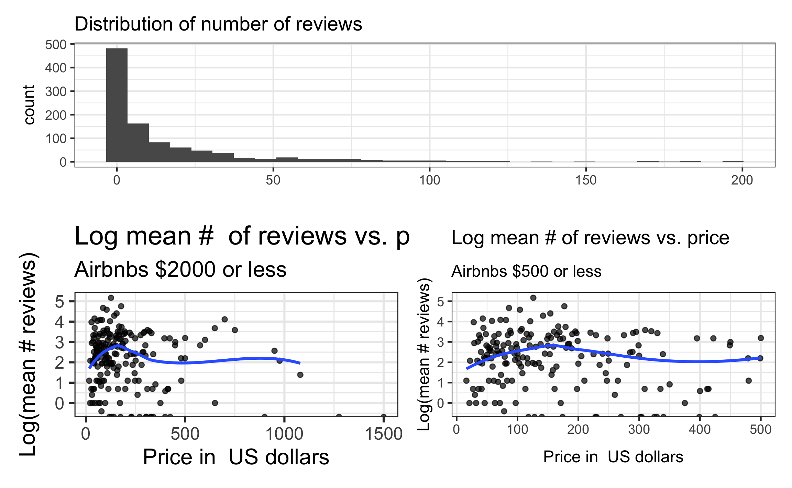
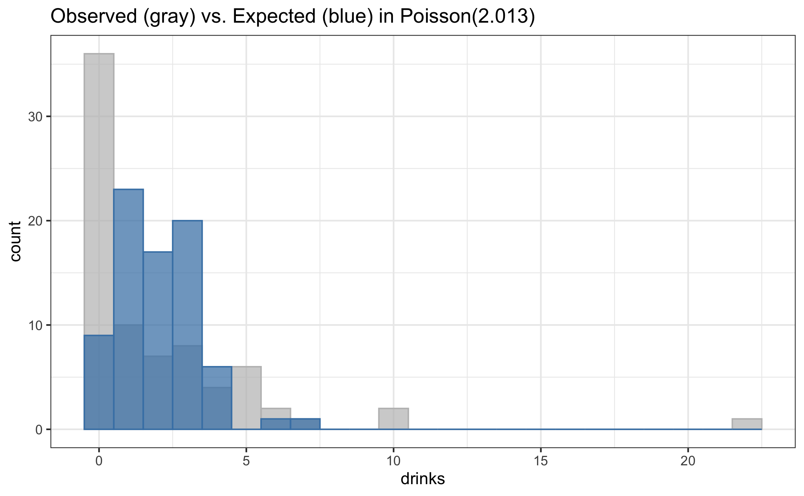

Poisson Regression
Offset & Zero-inflated Poisson models
Jan 31, 2024
Announcements
Topics
Offsets in Poisson regression
Zero-inflated Poisson regression
Offset
Data: Airbnbs in NYC
The data set NYCairbnb-sample.csv contains information about a random sample of 1000 Airbnbs in New York City. It is a subset of the data on 40628 Airbnbs scraped by Awad, Lebo, and Linden (2017).1
Variables
number_of_reviews: Number of reviews for the unit on Airbnb (proxy for number of rentals)price: price per night in US dollarsroom_type: Entire home/apartment, private room, or shared roomdays: Number of days the unit has been listed (date when info scraped - date when unit first listed on Airbnb)
Goal: Use the price and room type of Airbnbs to describe variation in the number of reviews (a proxy for number of rentals).
Data: Airbnbs in NYC
| id | days | last_scraped | host_since | room_type | bathrooms | bedrooms | price | number_of_reviews | review_scores_cleanliness | review_scores_location | review_scores_value | instant_bookable |
|---|---|---|---|---|---|---|---|---|---|---|---|---|
| 16859979 | 74 | 4/3/2017 | 1/19/2017 | Private room | 1.0 | 1 | 67 | 7 | 10 | 10 | 10 | FALSE |
| 16083673 | 913 | 4/3/2017 | 10/3/2014 | Private room | 0.5 | 1 | 49 | 7 | 8 | 9 | 9 | TRUE |
| 12870344 | 333 | 4/2/2017 | 5/4/2016 | Private room | 1.0 | 1 | 145 | 0 | NA | NA | NA | FALSE |
| 6561509 | 677 | 4/2/2017 | 5/26/2015 | Private room | 1.0 | 1 | 65 | 7 | 10 | 10 | 10 | FALSE |
| 1940534 | 1503 | 4/3/2017 | 2/20/2013 | Private room | 1.0 | 1 | 60 | 11 | 5 | 6 | 7 | FALSE |
EDA
EDA
| mean | var |
|---|---|
| 15.904 | 855.329 |
| room_type | mean | var |
|---|---|---|
| Entire home/apt | 16.824 | 820.289 |
| Private room | 15.223 | 909.915 |
| Shared room | 11.858 | 516.557 |
Considerations for modeling
We would like to fit the Poisson regression model
\[\log(\lambda_i) = \beta_0 + \beta_1 ~ price_i + \beta_2 ~ room\_type1_i + \beta_3 ~ room\_type2_i\]
Based on the EDA, what are some potential issues we may want to address in the model building?
Suppose any model fit issues are addressed. What are some potential limitations to the conclusions and interpretations from the model?
03:00
Offset
Sometimes counts are not directly comparable because the observations differ based on some characteristic directly related to the counts, i.e. the sampling effort.
An offset can be used to adjust for differences in sampling effort.
- Let \(x_{offset}\) be the variable that accounts for differences in sampling effort, then \(\log(x_{offset})\) will be added to the model.
\[\log(\lambda_i) = \beta_0 + \beta_1 ~ x_{i1} + \beta_2 ~ x_{i2} + ... + \beta_p ~ x_{ip} + \log(x_{offset_i})\]
- The offset is a term in the model with coefficient always equal to 1.
Adding an offset to the Airbnb model
We will add the offset \(\log(days)\) to the model. This accounts for the fact that we would expect Airbnbs that have been listed longer to have more reviews.
\[\log(\lambda_i) = \beta_0 + \beta_1 ~ price_i + \beta_2 ~ room\_type1_i + \beta_3 ~ room\_type2_i + \log(days_i)\]
Note: The response variable for the model is still \(\log(\lambda_i)\), the log mean number of reviews
Detail on the offset
We want to adjust for the number of days, so we are interested in \(\frac{reviews}{days}\).
Given \(\lambda\) is the mean number of reviews
\[\log\Big(\frac{\lambda_i}{days_i}\Big) = \beta_0 + \beta_1 ~ price_i + \beta_2 ~ room\_type1_i + \beta_3 ~ room\_type2_i\]
\[\Rightarrow \log({\lambda_i}) - \log(days_i) = \beta_0 + \beta_1 ~ price_i + \beta_2 ~ room\_type1_i + \beta_3 ~ room\_type2_i\]
\[\Rightarrow \log({\lambda_i}) = \beta_0 + \beta_1 ~ price_i + \beta_2 ~ room\_type1_i + \beta_3 ~ room\_type2_i + \log(days_i)\]
Airbnb model in R
| term | estimate | std.error | statistic | p.value |
|---|---|---|---|---|
| (Intercept) | -4.1528 | 0.0027 | -1523.1520 | 0 |
| price | -0.0004 | 0.0000 | -38.5904 | 0 |
| room_typePrivate room | -0.0469 | 0.0028 | -16.8612 | 0 |
| room_typeShared room | -0.1468 | 0.0086 | -17.0990 | 0 |
The coefficient for \(\log(days)\) is fixed at 1, so it is not in the model output.
Interpretations
| term | estimate | std.error | statistic | p.value |
|---|---|---|---|---|
| (Intercept) | -4.1528 | 0.0027 | -1523.1520 | 0 |
| price | -0.0004 | 0.0000 | -38.5904 | 0 |
| room_typePrivate room | -0.0469 | 0.0028 | -16.8612 | 0 |
| room_typeShared room | -0.1468 | 0.0086 | -17.0990 | 0 |
Interpret the coefficient of
priceInterpret the coefficient of
room_typePrivate room
03:00
Quasi-Poisson model
airbnb_model_q <- glm(number_of_reviews ~ price + room_type,
data = airbnb, family = quasipoisson,
offset = log(days))
tidy(airbnb_model_q)# A tibble: 4 × 5
term estimate std.error statistic p.value
<chr> <dbl> <dbl> <dbl> <dbl>
1 (Intercept) -4.15 0.0192 -216. 0
2 price -0.000426 0.0000777 -5.48 0.0000000434
3 room_typePrivate room -0.0469 0.0196 -2.39 0.0167
4 room_typeShared room -0.147 0.0605 -2.43 0.0152 Zero-inflated Poisson model
Data: Weekend drinking
The data weekend-drinks.csv contains information from a survey of 77 students in a introductory statistics course on a dry campus.1
Variables
drinks: Number of drinks they had in the past weekendoff_campus: 1 - lives off campus, 0 otherwisefirst_year: 1 - student is a first-year, 0 otherwisesex: f - student identifies as female, m - student identifies as male
Goal: The goal is explore factors related to drinking behavior on a dry campus.
EDA: Response variable
Observed vs. expected response
Two types of zeros
There are two types of zeros
- Those who happen to have a zero in the data set (people who drink but happened to not drink last weekend)
- Those who will always report a value of zero (non-drinkers)
- These are called true zeros
We introduce a new parameter \(\alpha\) for the proportion of true zeros, then fit a model that has two components:
1️⃣ The association between mean number of drinks and various characteristics among those who drink
2️⃣ The estimated proportion of non-drinkers
Zero-inflated Poisson model
Zero-inflated Poisson (ZIP) model has two parts
1️⃣ Association, among those who drink, between the mean number of drinks and predictors sex and off campus residence
\[\log(\lambda_i) = \beta_0 + \beta_1 ~ off\_campus_i + \beta_2 ~ sex_i\] where \(\lambda\) is the mean number of drinks among those who drink
2️⃣ Probability that a student does not drink
\[\text{logit}(\alpha_i) = \log\Big(\frac{\alpha_i}{1- \alpha_i}\Big) = \beta_0 + \beta_1 ~ first\_year_i\]
where \(\alpha\) is the proportion of non-drinkers
Note: The same variables can be used in each component
Details of the ZIP model
- The ZIP model is a special case of a latent variable model
- A type of mixture model where observations for one or more groups occur together but the group membership unknown
- Zero-inflated models are a common type of mixture model; they apply beyond Poisson regression
ZIP model in R
Fit ZIP models using the zeroinfl function from the pscl R package.
library(pscl)
drinks_zip <- zeroinfl(drinks ~ off_campus + sex | first_year,
data = drinks)
drinks_zip
Call:
zeroinfl(formula = drinks ~ off_campus + sex | first_year, data = drinks)
Count model coefficients (poisson with log link):
(Intercept) off_campus sexm
0.7543 0.4159 1.0209
Zero-inflation model coefficients (binomial with logit link):
(Intercept) first_year
-0.6036 1.1364 Tidy output
Use the tidy function from the poissonreg package for tidy model output.
Tidy output
Proportion of non-drinkers
Interpreting the model coefficients
| term | type | estimate | std.error | statistic | p.value |
|---|---|---|---|---|---|
| (Intercept) | count | 0.754 | 0.144 | 5.238 | 0.000 |
| off_campus | count | 0.416 | 0.206 | 2.020 | 0.043 |
| sexm | count | 1.021 | 0.175 | 5.827 | 0.000 |
Interpret the intercept.
Interpret the coefficients
off_campusandsexm.
03:00
Estimated proportion zeros
| term | type | estimate | std.error | statistic | p.value |
|---|---|---|---|---|---|
| (Intercept) | zero | -0.604 | 0.311 | -1.938 | 0.053 |
| first_year | zero | 1.136 | 0.610 | 1.864 | 0.062 |
Based on the model…
- What is the probability a first-year student is a non-drinker?
- What is the probability a upperclass student (sophomore, junior, senior) is a non-drinker?
02:00
Comparing Poisson and ZIP Models
Suppose we want to compare our ZIP model to a Poisson model \(\log(\lambda_i) = \beta_0 + \beta_1 ~ off_campus_i + \beta_2 ~ sex_i\)
Which of the following methods can we use to compare these models?
AIC
BIC
Likelihood ratio test
Likelihoods for ZIP model
Probabilities under ZIP model
There are three different types of observations in the data:
- Observed zero and will always be 0 (true zeros)
- Observed 0 but will not always be 0
- Observed non-zero count and will not always be 0
Probabilities under ZIP model
True zeros \[P(0 | \text{true zero})= \alpha\]
Observed 0 but will not always be 0
\[P(0 | \text{not always zero}) = (1 - \alpha)\frac{e^{-\lambda}\lambda^0}{0!}\]
Did not observe 0 and will not always be 0
\[P(z_i | \text{not always zero}) = (1 - \alpha)\frac{e^{-\lambda}\lambda^{z_i}}{z_i!}\]
Probabilities under ZIP model
Putting this all together. Let \(y_i\) be an observed response then
\[P(Y_i = y_i | x_i) = \begin{cases} \alpha + (1 - \alpha)e^{-\lambda_i} && \text{ if } y_i = 0 \\ (1 - \alpha)\frac{e^{-\lambda_i}\lambda_i^{y_i}}{y_i!} && \text{ if } y_i > 0 \end{cases}\]
Recall from our example,
\[\lambda_i = e^{\beta_0 + \beta_1~off\_campus_i + \beta_2 ~ sex_i}\]
\[\alpha_i = \frac{e^{\beta_{0\alpha} + \beta_{1\alpha} ~ first\_year_i}}{1 + e^{\beta_{0\alpha} + \beta_{1\alpha} ~ first\_year_i}}\]
- Plug in \(\lambda_i\) and \(\alpha_i\) into the above equation obtain the likelihood function